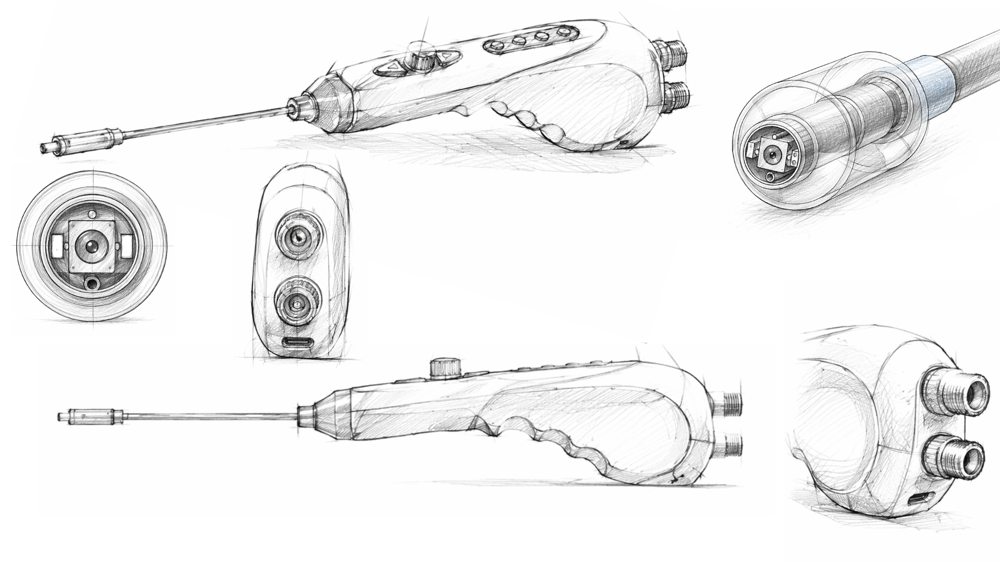
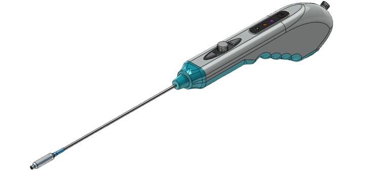
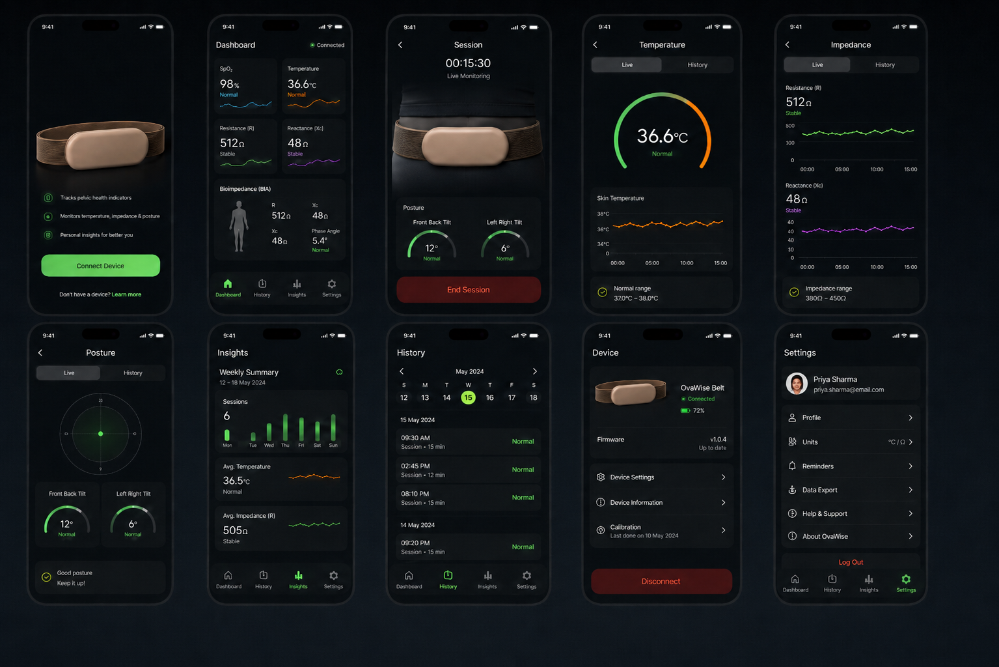

Where the device is decided. Concepts are drawn before they are modelled, sections are resolved before tooling is quoted, and the risk file is opened on the first day rather than the last.
Form, grip, port placement and proportion are explored on paper, where a wrong answer costs an hour. The chosen direction is annotated into a specification — every button, port, wheel and connector named and justified — the cross-section is packed until it closes the diameter target, and only then is the geometry rebuilt as a solid model.


Interface design starts with what the hardware can actually measure. Screens are laid out around the reading that matters, the units a clinician expects, and a clear signal-quality state — then built as the firmware is written, not after it.

Once the design is agreed, the first physical parts come out of our own prototyping lab within two days.